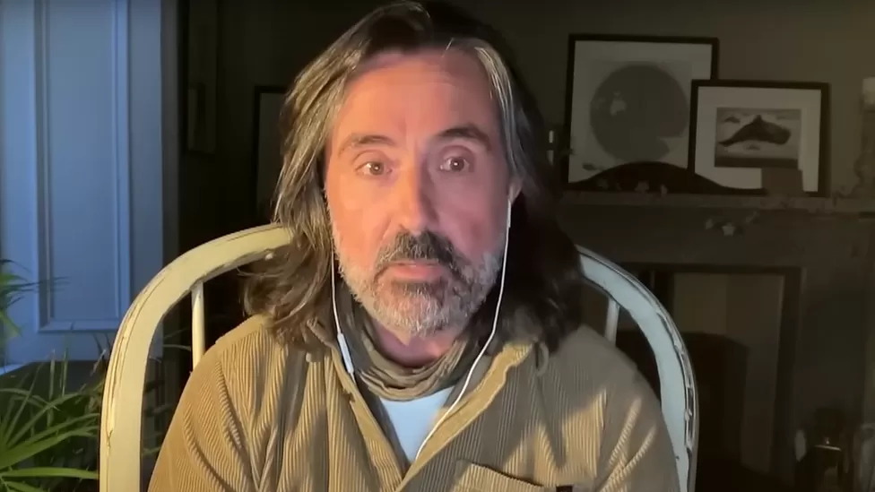

Tunisia fires: 'We had no water to douse the flames'
South Korean POWs abandoned for decades in North Korea
False claims that heatwave is bogus spread online
Winnipeg: A daughter's quest to find her mother's remains
Semiconductors: Can India become a global chip powerhouse?
Travis King: How the US negotiates with North Korea